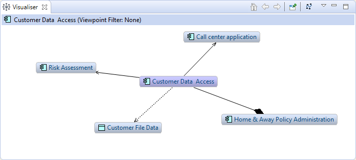
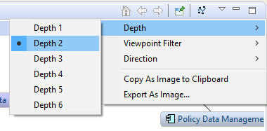

The Visualiser window displays the selected model concept and all of its relationships with other model concepts in a graphical way. It is the graphical equivalent of the Navigator. Selecting an element or relationship in the Model Tree, the Navigator or in a Diagram View will update the selection in the Visualiser.
The Visualiser Window
To use the Visualiser, select any element or relationship in the Model Tree, the Navigator, or in a View. The Visualiser will update to reflect the current selection. The Visualiser highlights the selected concept and shows all relationships and any connected elements. Double-clicking on one of the connected elements allows you to "Go Into" to the element so that it is the focal central concept, and all of its relationships and connected concepts are displayed. You can also "Go Into" an element from the toolbar in the Visualiser window, and also select "Back" to return to the previous element. Select "Home" on the toolbar to return to the first selected concept.
The Visualiser will display the selected concept's connected concepts to a default depth of one level (immediate connections). To change the depth level of how far the connections are calculated, select the Depth level from the drop-down menu in the Visualiser window:
The Visualiser Menu for Depth
You can filter the displayed elements in the Visualiser from the "Viewpoint Filter" menu. This will display only those elements that are permissible in the given Viewpoint. To view all elements select the "None" Viewpoint. For more information see the Viewpoints section.
You can filter the displayed type of element in the Visualiser from the "Element Filter" menu. This will display only the selected element type. To view all element types select the "All" option.
You can filter the displayed relationship in the Visualiser from the "Relationship Filter" menu. This will display only the selected relationship type. To view all relationship types select the "All" option.
This menu item allows you to set whether relationships incoming and outgoing relationships and their connected elements are displayed. Options are "Both", "Incoming" and "Outgoing". "Incoming" shows all incoming relationships, "Outgoing" shows outgoing relationships, while "Both" shows both incoming and outgoing relationships. This is similar to the functionality in the Navigator.
The first time a focussed concept is displayed in the Visualiser window it is laid out with a default layout. If you wish to re-layout, you can press the "Layout" button on the toolbar in the Visualiser window.
You can save the contents of the Visualiser as an image to file, or copy the image to the system clipboard from the context menu.